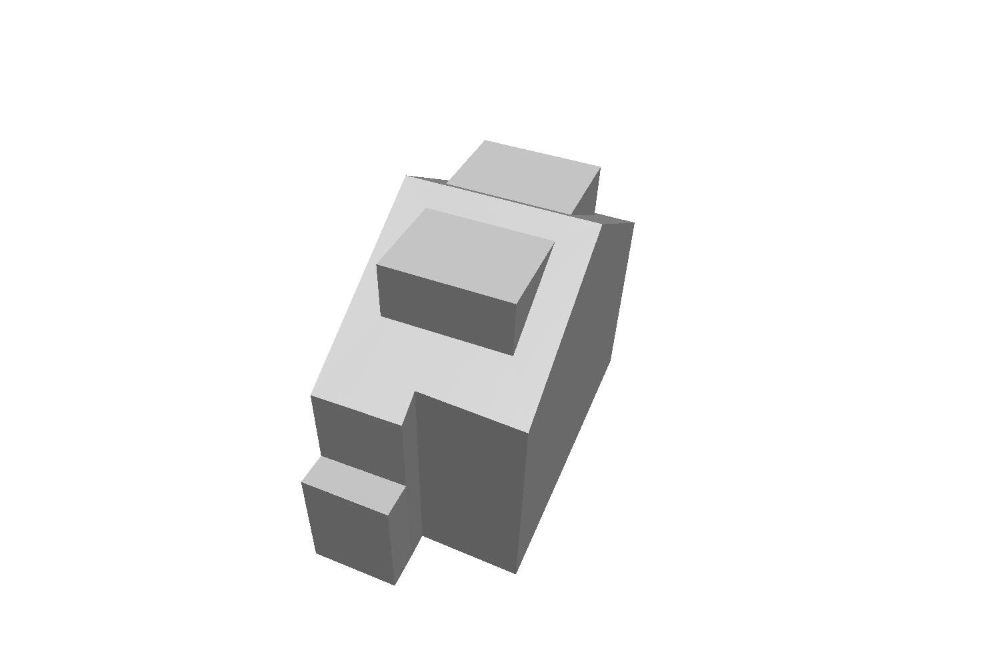
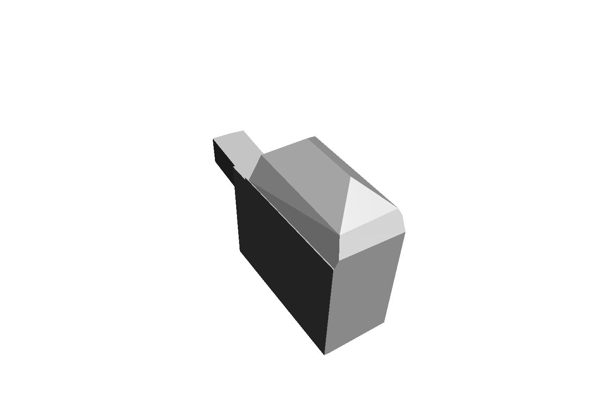
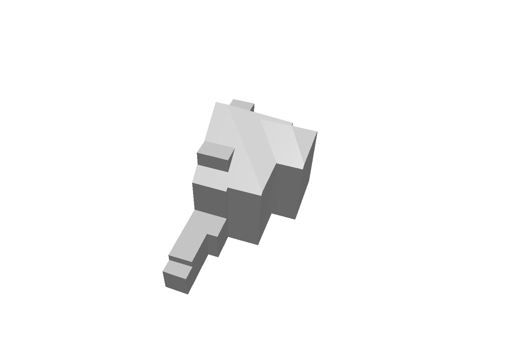
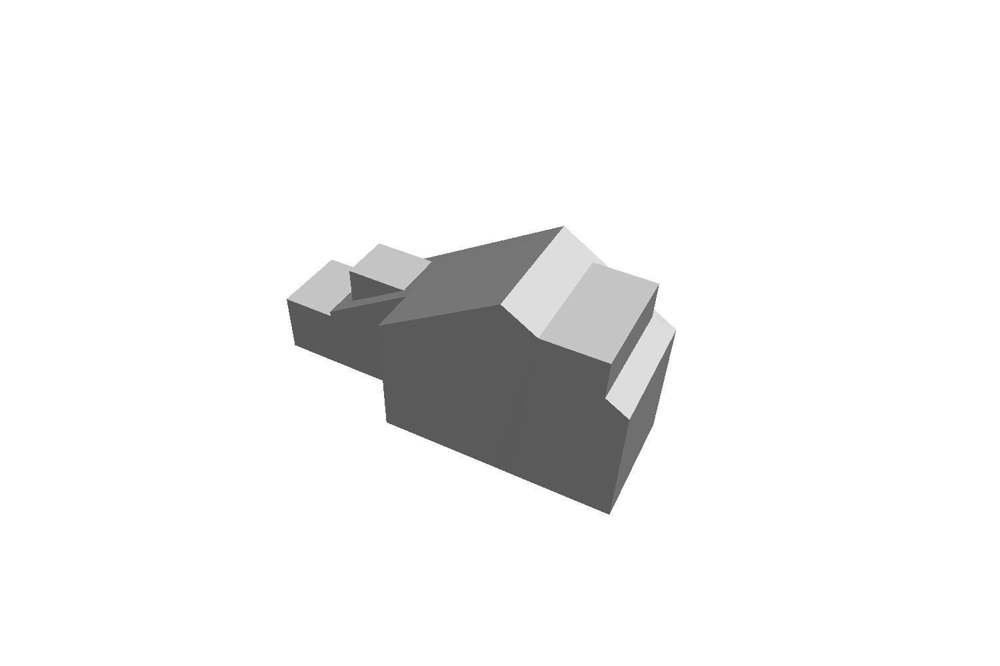
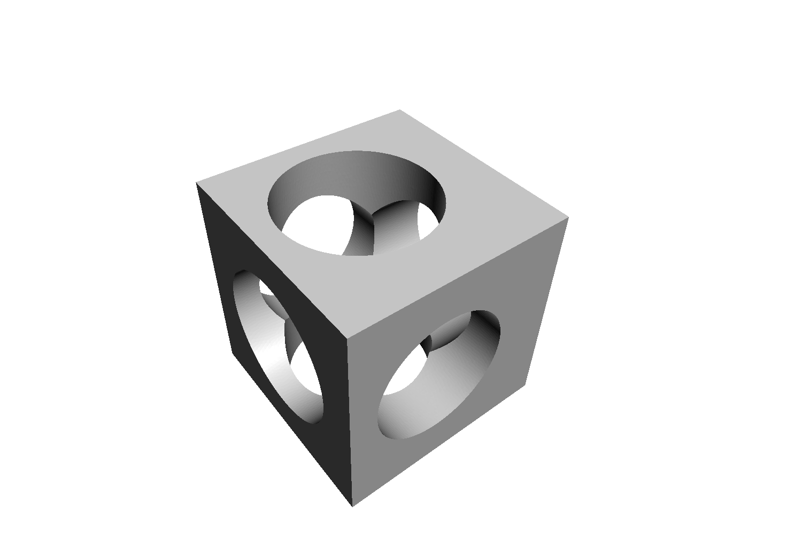
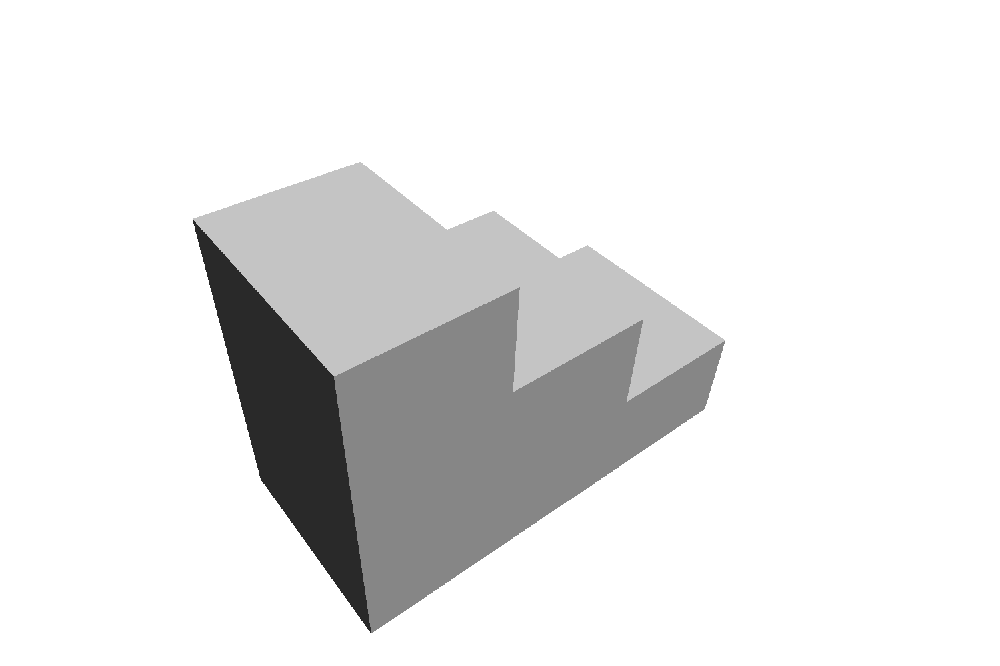
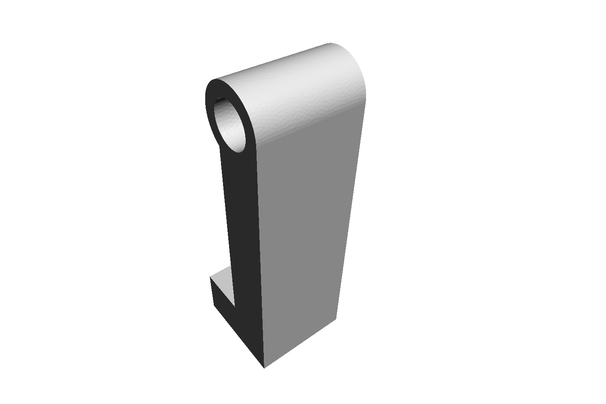
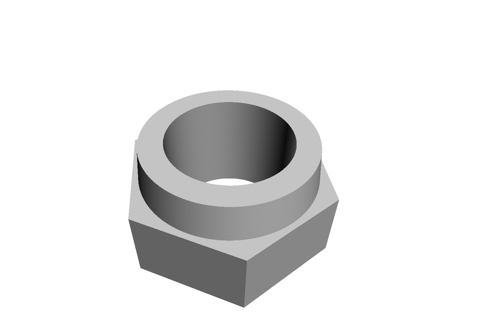
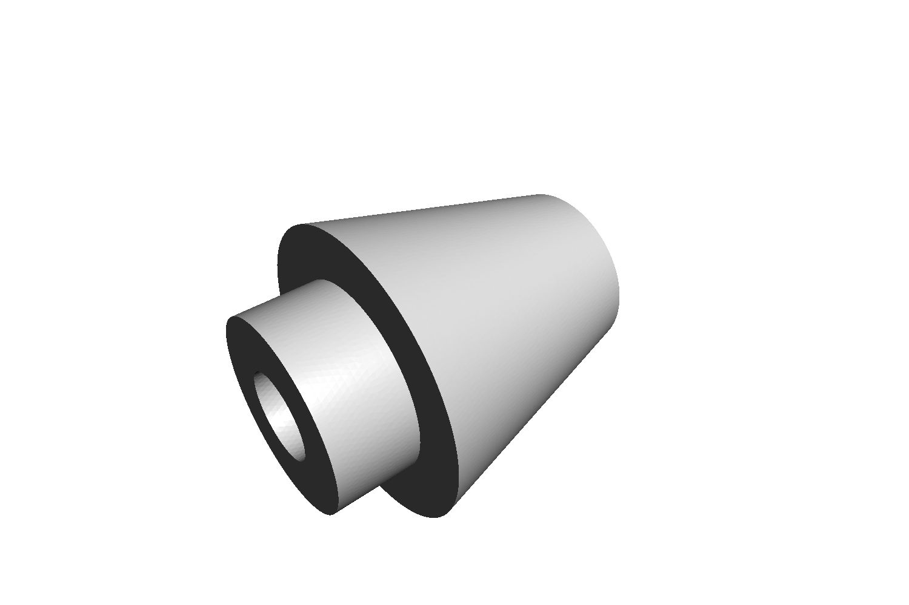
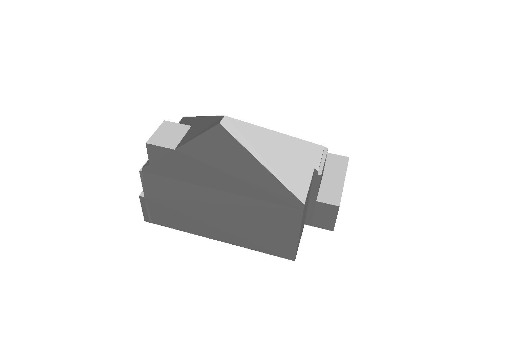

2026

UniCo
Unified Completion with
Neural Primitives
2026
We propose a SIM(3)-equivariant framework that infers neural primitives directly from raw scans. This representation enables high-quality 3D reconstruction with explicit, verifiable topology. Our framework can be applied to both exterior and interior settings and consolidates a series of our recent advances into a single system that yields generalizable, parametric surface models and scales from individual buildings to city blocks. As a result, it bridges the gap between raw scans and the actionable models required by AECO workflows at operational scale.

Neural primitives provides three capabilities: normalization-free generalization, primitive-driven shape completion, and topology-aware, scalable reconstruction.
Click a thumbnail to view the completion demo. Drag to rotate, scroll to zoom.
Use the slider to increase pose-and-scale deviation from the canonical configuration and compare methods under the same deviation.
Here, we compare with AdaPoinTr (TPAMI’23), SymmComplete (AAAI’25), and UniCo (’26).
Left: canonical pose and scale; Right: maximum deviation.





Left: canonical pose and scale; Right: maximum deviation.






We rethink scan-to-BIM as fitting neural primitives directly to raw scans, bridging parametric completion and surface reconstruction. The organizing principle is simple: infer primitives first, partition space second, and reconstruct the model last


Neural primitives is built upon a series of innovative research works.